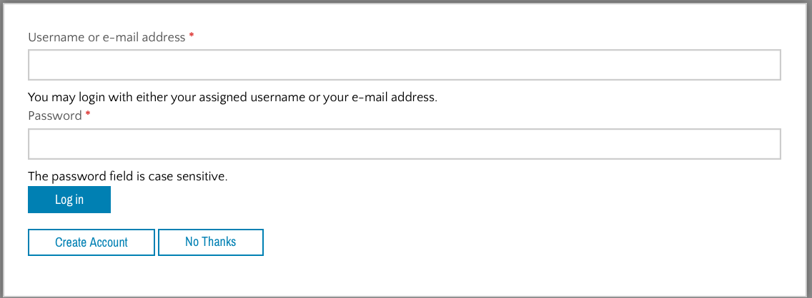

Toolbox User Flow¶
Toolboxes are designed to be worked on over time and are designed to bundle the processes required to complete more complex legal issues into an easier to use format than our How-to legal content articles.
Toolboxes are accessed via:
- A portal page
- A content category page that matches the category
- Search results
When a user starts on a portal page, they have 2 options to access a toolbox:
- Via a toolbox selector form
- By picking a toolbox from a grid
Portal page with links to toolbox selector form and toolboxes
Toolbox selector form¶
The toolbox selector form is a type of portal main page content. It is generated automatically from the selector form label field provided by each toolbox associated with a particular portal.
In addition, there is in the portal main page toolform selector block, a space to add an optional “Other” to direct users who land on the toolbox page but have an issue not covered by our toolboxes.

When the user completes this form, a record is created on the back end with the toolboxes the user receives. If the user is logged in, the toolboxes are associated with their user ID automatically. If they start a toolbox, the toolbox is set to a status of “Started;” otherwise, it is just “Saved.”

If the user is not logged in, they see a modal when they click “Start” asking them to log in or register
If the user says “No thanks,” they are given a return code to use to access their work in the future.

Toolbox page¶
The main toolbox page has no real content. It is just a form to pick which tool(s) in a toolbox you need to complete and is created automatically based on the tools associated with the toolbox.
There is also:
- a blue block that represents the primary legal category the toolbox falls into
- A “Using this toolbox” standard block
- Optionally, a fast fact block that appears on the left
- Optionally, some portal-style content that can display additional information above or below the toolbox selector form
Toolbox landing page example
Once tools are selected, the user will see the same “My issues” form that was displayed when they selected toolboxes.
Navigating a tool¶
Each tool is made up of a number of different steps that need to be completed to complete a legal process.
Those steps appear in the “My progress” block on each tool step page.
The first step is always the main “tool” content type. It includes:
- an overview
- a Pick up where I left off block
- optionally, a before you get started block
- optionally, a Learn more carousel component
- the My progress block

Users can check off their progress by checking the boxes next to the steps in the My progress block. They can also jump ahead by clicking on the links, giving them the ability to see what’s coming up.